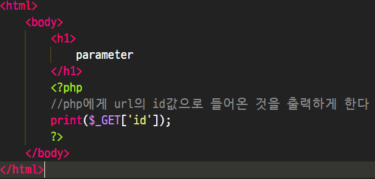

웹 개발에서 Back-end 기술을 사용하는 이유는 생산성 때문이기도 하다.(php, jsp, 장고..)
1억개의 페이지가 있다면 수정이 굉장히 어려울 것이다.
php는 이런상황, 곤란한 상황에서 쓰기 좋은 도구이다.
my
slrclub
my와 slrclub의 차이점?
my의 경우 각각 할당된 페이지가 클라이언트 요청에 따라 응답된다.
slrclub은 query string으로 해당 id값이 요청되어 생성된다.
php코드는 생산성을 극대화해주는 힘을 가진다.
받는 파라미터값에 따라 다른 모습을 보여주기때문에.
다중인격으로 생각하면 쉽다.
html을 찍어내는 공장이다.
뭔가 프론트컨트롤러 패턴과 비슷해보이는것 같다. 디스팩쳐 역할을 하는 인덱스.php와 ?id= 에 따라 다른 것을 출력가능.

client -- webserver -- php -- 생성 -- php -- webserver -- client
웹서버가 php에게 권한을 위임한다.
//간편하네;;
데이터가 추가됬다고 코드를 바꾸는 건 굉장히 고전적인 방식이다.
자동으로 추가된 내용이 나오게 한다면 훨씬 발전된 방식의 웹페이지 구성이다.
변수와 함수를 활용!!!(중복제거, 효율성!!)

매번 추가하지말고

반복문과 변수를 활용하여 출력한다.
data 디렉토리에 파일을 생성할때 마다 자동으로 응답
//good
. 은 현재폴더 / ..은 부모디렉토리